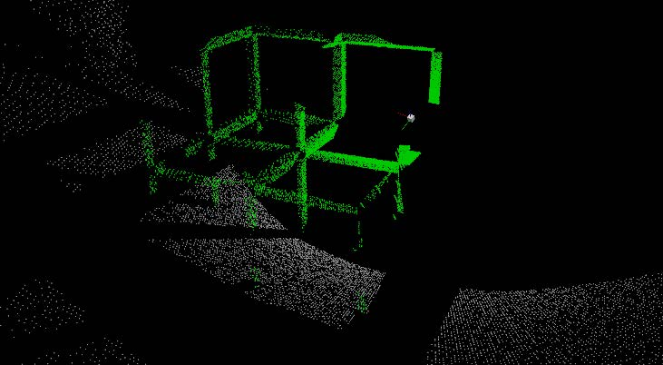

|
Marc Fabregat I'm a researcher in the ARVC Research Group, part of the I3E Research Institute at UMH. I'm a teaching assistant for the Computer Vision course. I have also taught Control Systems and Systems Theory. I'm completing my PhD at UMH in the upcoming months, under the supervision of Adrián Peidró and Óscar Reinoso, and hold a MSc in Robotics and a BSc in Electronics and Automation Engineering. Email / CV (español) / Publications / Scholar / Github / LinkedIn |
{kind=link}
ResearchMy current research focuses on motion planning for climbing legged robots and on redundancy resolution. I'm also interested in machine learning and computer vision. Below are some of my selected publications. For a complete list, please check my publications page in the ARVC website. |
|
Topological and spatial analysis of self-motion manifolds for global redundancy resolution in kinematically redundant robots
Marc Fabregat-Jaén, Adrián Peidró, Matteo Colombo, Paolo Rocco, Óscar Reinoso Mechanism and Machine Theory, 2025 We use self-motion manifolds to globally solve the redundancy resolution problem. |
|
|
Planificación jerárquica de movimientos de un robot trepador bípedo en estructuras tridimensionales reticulares
Marc Fabregat-Jaén, Adrián Peidró, Paula Mollá-Santamaría, Francisco José Soler, Óscar Reinoso RIAI, 2024 Path planning for two-legged climbing robots in truss structures. |
|

|
Augmented Feasibility Maps: A Simultaneous Approach to Redundancy Resolution and Path Planning
Marc Fabregat-Jaén, Adrián Peidró, Esther González-Amorós, María Flores, Óscar Reinoso ICINCO, 2024 We propose the extension of the concept of feasibility maps to simultaneously solve redundancy and path planning. |
|
Evaluation of Open-Source OCR Libraries for Scene Text Recognition in the Presence of Fisheye Distortion
María Flores, David Valiente, Marcos Alfaro, Marc Fabregat-Jaén, Luís Payá ICINCO, 2024 We evaluate the performance of different computer vision libraries under fisheye distortion. |
|
|
Exploring feasibility maps for trajectory planning of redundant manipulators using RRT
Marc Fabregat-Jaén, Adrián Peidró, Arturo Gil, David Valiente, Óscar Reinoso ETFA, 2023 We solve the redundancy of robots by means of feasibility maps. |
|
|
Análisis de estabilidad de un robot caminante en terrenos naturales
Paula Mollá, Adrián Peidró, Marc Fabregat-Jaén, L. Miguel Jiménez, Luís Payá, Óscar Reinoso JNR, 2023 Support analysis of an 8-legged walking robot. |
|
|  |
Segmentación de planos a partir de nubes de puntos 3D en estructuras reticulares
Francisco José Soler, Adrián Peidró, Marc Fabregat-Jaén, Luís Payá, Óscar Reinoso JNR, 2023 Synthetic generation of a dataset for MLP training for segmentation of truss structures. |
|
Source code from Jobn Barron's website |